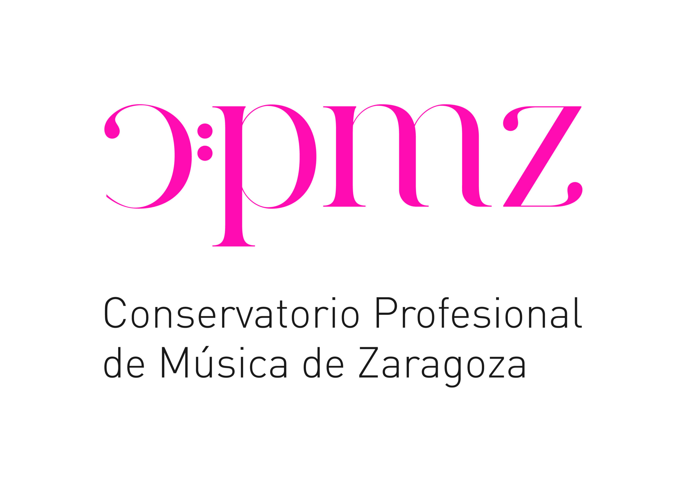

Education
Zaragoza, Spain
Feb 2020 – Mar 2025
Feb 2020 – Mar 2025
PhD in Electronics
University of Zaragoza
Advances in Music Technology with Deep Learning: From Music Analysis to Production.
Cum Laude. Supervisor: José Ramón Beltrán Blázquez.
Committee: Isabel Barbancho, Antonio Miguel Artiaga, Iran R. Roman.
Zaragoza, Spain
Sep 2017 – Dec 2019
Sep 2017 – Dec 2019
M.S. in Ingeniería Industrial
University of Zaragoza
Musical Analysis with Artificial Intelligence.
ERASMUS: Politecnico di Milano.
Zaragoza, Spain
Sep 2011 – Sep 2017
Sep 2011 – Sep 2017
B.S. in Ingeniería de Tecnologías Industriales
University of Zaragoza
Musical Composition with a Neural Network. Honorary Distinction.
Zaragoza, Spain
Sep 2007 – Jun 2013
Sep 2007 – Jun 2013
